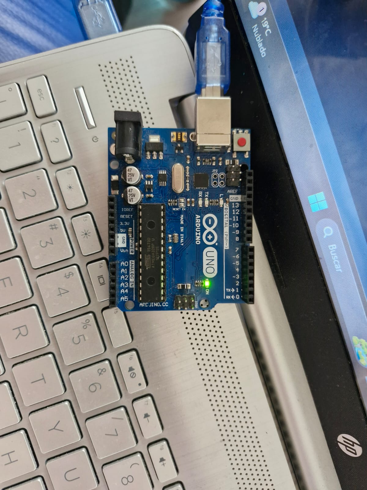

La ingeniería mecatrónica se basa en la automatización de maquinaria, la creación e productos que faciliten la vida diaria y el conjunto de otras ramas de ingeniería que son: mecánica, informática, sistemas de control y la electrónica.
La ingeniería mecatrónica, debido a que combina algunas especialidades de la ingeniería, se puede ejercer en múltiples sectores industriales, ya sea en empresas de alta tecnología o en aquellas que necesiten adaptar nuevos sistemas de automatización, control y robótica.
Por lo cual en esta página web podremos encontrar distintos diseños que hemos creado en introducción a la mecatrónica y que nos van a impulsar a conseguir y aprender a hacer las cosas e iremos desde cosas sencillas hasta algunas más complejas, llegando a ver cosas de las distintas ramas de especialización que hay en la ingeniería.
Resumen: La practica 555, consto de usar este componente en la elaboración de un circuito sencillo, el cual debe de ir reduciendo la potencia de la luz con un potenciómetro.
En este pequeño reporte se podrá analizar los circuitos que mi compañero y yo realizamos utilizando el potenciómetro y el componente 555, para que con estos se puediera probar y dar a conocer como funciona.
Materiales: Los materiales que se utilizaron durante esta práctica fueron: Protoboard, Leds, jumpers, pila de 9 volts, Potenciómetro,555, Resistencia 1K
En la construcción se busco conectar correctamente todos los cables y uniones existentes en la protoboard, de manera que el LED pudiera encender exitosamente, se busco realizarlo primero en Tinkercad para así poder evitar cualquier error a la hora de hacerlo en físico y definitivamente el haberlo realizado primero en Tinkercad nos ayudo a ver como podía funcionar en la vida real aunque le cambiáramos algunos aspectos. Este circuito contaba de partes muy básicas y lo que se buscaba lograr era poder controlar la intensidad del LED con el potenciómetro.
Construcción: Al momento de la construcción el primer paso que se realizo fue hacer el circuito en Tinkercad, para que de esta manera, se pudiera comprobar que funcionaba correctamente, terminando con este paso se empezó la construcción del circuito en la cual se busco que los cables de la pila estuvieran listos para ser conectados de cualquier lado y que el circuito siguiera funcionando, y sobre todo que cada uno de los cables fuera en el lugar correcto, tanto de las entradas como de las salidas en el potenciómetro y en el 555.
Se observa en los vídeos e imágenes que se hicieron de forma correcta las conexiones de este circuito y se llega a ver como la intensidad si empieza a bajar hasta ni siquiera encender y así sucesivamente. También observamos como se comporta en 555 acom
Página web sencilla
Para esta práctica, diseñamos las bases de una página web en la aplicación de visual code que es base python usando diferentes herramientas que nos ayudaron a escribir, acomodar, presentar e incluso agregar imágenes en la página.
Las páginas web tienen muchos usos, desde presentar datos a un grupo de personas, hasta el intercambio de vienes, incluyendo aplicaciones para controlar varios dispositivos y juegos, es por eso que es de alta importancia conocer como se puede crear una página web desde cero y editarla a nuestro gusto. Para esta práctica usamos:
- Una computadora con Visual Code instalado
- Conexion a internet
Para desarrollar nuestra primera página web, primero tuvimos que crear una carpeta donde se guardarían todos los datos de esta página, después de esto, tuvimos que crear el nuevo archivo llamado Index, el cual sería la base de nuestra página web.
En este archivo usaríamos El comando DOCTYPE para declarar esta página como html; usamos los comandos head y body para separar nuestro código en secciones, donde las cuales agregaríamos texto los comandos h1, h2, h3, h4 y p.
Por último, para agregar imágenes, usamos El comando image donde tenemos que descargar una imagen agregarla a la carpeta de la cual se encuentra el archivo Index y desde el mismo código mandar a llamar la imagen con la dirección en donde está guardado.
En conclusión, esta práctica nos ayudó bastante para la creación de páginas web, las cuales usaremos durante toda la carrera para exponer ciertos documentos y experimentos de una manera más profesional y también nos ayudará para ciertos proyectos donde estamos controlar piezas mecánicas de manera digital.
Arduino 0
Esta práctica fue introductoria al programa de arduino y sus funciones básicas para la programación y la creación de máquinas.
Arduino es una empresa la cual se dedica en crear equipos y programas intuitivos y abiertos para todo público que faciliten la creación de objetos eléctricos con una finalidad específica, gracias a esto el proceso de creación de un robot se ha facilitado bastante y es de alta importancia conocer cómo codificar un arduino para poder crear los proyectos que se nos solicitan durante toda la carrera. Para esta práctica ocuparemos:
- Arduino Uno
- Computadora con el programa de Arduino instalado
- Cable de conexión para Arduino Uno
- 2 LEDs
- Display de 7 segmentos
- Protoboard
- Resistencias
En esta practicado hubieron varias ejercicios que tuvimos que completar, cada uno con cierto grado dificultad, los primeros fueron para acostumbrarnos con los pines de salida y el LED dentro del arduino. Después de ello, tuvimos que conectar un LED a las entradas del arduino y lograr que estés se prendiera con pin output high, repetimos lo mismo pero con la protoboard y dos LEDs y por último conectamos un display de 7 segmentos al arduino y logramos que este prendiera unos puntos especificados con el código que el profe nos proporcionó.
Para concluir el arduino es una herramienta muy versátil la cual nos va a ayudar bastante en la creación de autómatas y proyectos a lo largo de toda la carrera y es bastante relevante que conozcamos las bases de la codificación de un arduino para no cometer errores durante trabajos a futuro
DELAY
BLINK
HIGH

LOW
LEDS
LEDS Protoboard
LEDS 1
LEDS 2
DISPLAY 1
DISPLAY 2
Arduino 1
En esta practicados pusimos a prueba las entradas digitales de un arduino para aprender o apagar un LED de acuerdo a el resultado de un botón en las entradas digitales. También logramos crear unas compuertas lógicas a base de estos botones y un LED.
La versatilidad de una proviene de las entradas y salidas digitales que contiene, pues los 13 pines. Los puedo usar para recibir o brindar información y o voltaje la cual puede ser interpretada con el mismo código para cumplir ciertas funciones. En esta práctica ocuparemos los siguientes materiales y herramientas:
- Arduino Uno
- Computadora con el programa de Arduino instalado
- Cable de comunicación de Arduino
- 4 LEDS
- 2 botones
- Protoboard
- Resistencias
Al conectar un botón a un pin y colocar ese pin como entrada, podemos conseguir que un led conectado al Arduino como salida pueda prenderse y apagarse a la pulsación del botón usando ya sea un IF para detectar cuando el botón es pulsado o directamente darle el valor del botón al pin de salida.
Usando contadores y delays, podemos crear un contador donde cada vez que se presione el botón, un LED se prenderá hasta completar la serie.
Por último, podemos crear compuertas lógicas usando IF anidados para checar si 2 botones están siendo presionados o no y dar el resultado de esta operación.
De esta práctica podemos concluir que el usar los pines de un arduino son la base de muchas instrumentos eléctricos y que con ellas podemos crear una infinidad de objetos y componentes, también podemos observar que requerimos una buena fundamentación de programación en c++ para conseguir códigos más eficazes a la hora de codificar el Arduino.
1 BOTON
2 BOTONES
CONDICIONALES 1 BOTON
CONDICIONALES 2 BOTONES
CONTADOR LEDS
OR
AND
Arduino 2
El Arduino es un código de fácil manejo que es utilizado para construir proyectos electrónicos y va a permitir crear diferentes tipos de microordenadores, para darle el uso que sea necesario. Y un servomotor será como un motor estándar que utiliza la retroalimentación de posición para controlar su velocidad de rotación y posición. La señal de control, que puede ser analógica o digital, representa el comando de posición final para el eje.
Materiales: protoboard,jumpers, pila, fuente, servomotor, potenciómetro, Arduino.
Construcción: Para la construcción del servomotor se tuvo que conectar este al Arduino y a la vez a la protoboard y cuando era requerido también se conectaba al potenciómetro, para que así todo el circuito estuviera conectado y alimentado. Hubieron veces que a la hora de la construcción se tuvieron que dejar las pilas de lado y pasar a una fuente, para que nos proporcionara el voltaje y la corriente necesaria. Los servomotores funcionaron bien y se pudieron lograr cada una de las prácticas requeridas de manera correcta, pudimos ver gracias a cada una de estas como es que funcionan los servomotores y que es lo que pueden ir haciendo, con las distintas programaciones que les des.
Finalmente podemos concluir que los servomotores son herramientas muy potentes dependiendo de como los uses, y que tenemos muchas maneras diferentes de hacerlo y sobre todo que es importante reconocer cuando vas a ocupar una fuente y cuando puedes continuar con la pila, para que no le pase nada a ninguno de los componentes que estes utilizando.
Referencias: Electrónica Rayte SL. (n.d.). https://rayte.com/blog/post/6-que-es-y-para-que-sirve-el-arduino
Aula. (2023, December 12). Servomotores: Héroes Silenciosos de la Tecnología Moderna. aula21 | Formación para la Industria. https://www.cursosaula21.com/que-es-un-servomotor/